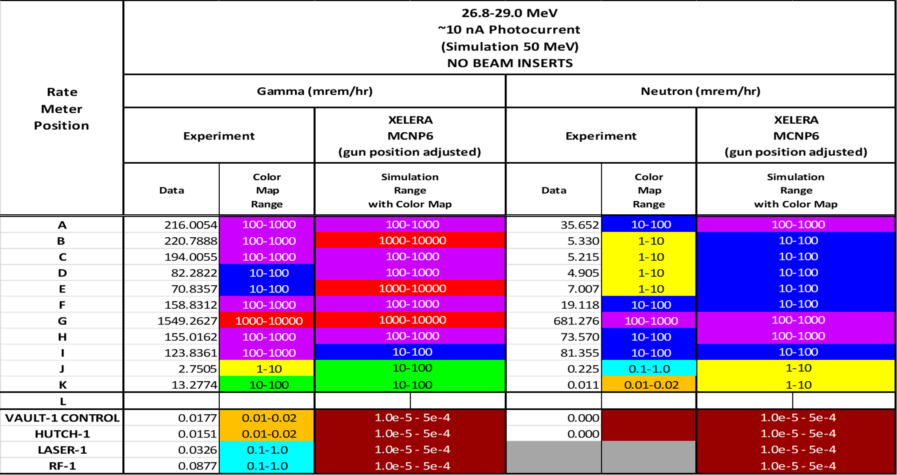
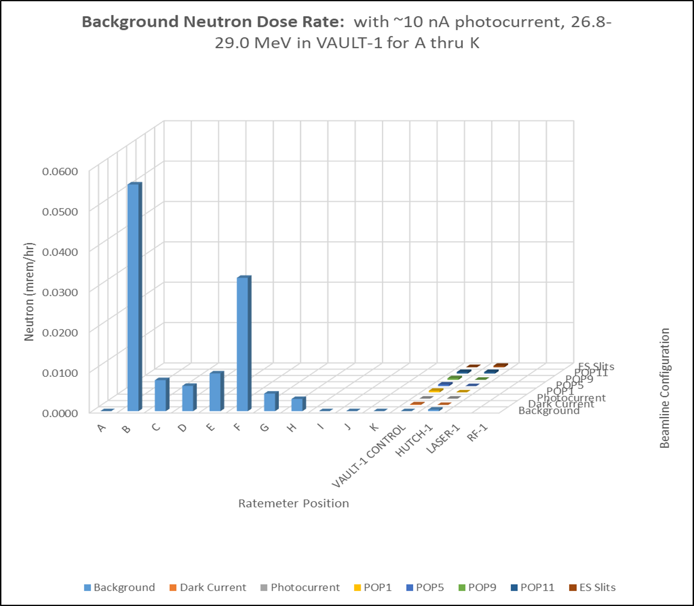
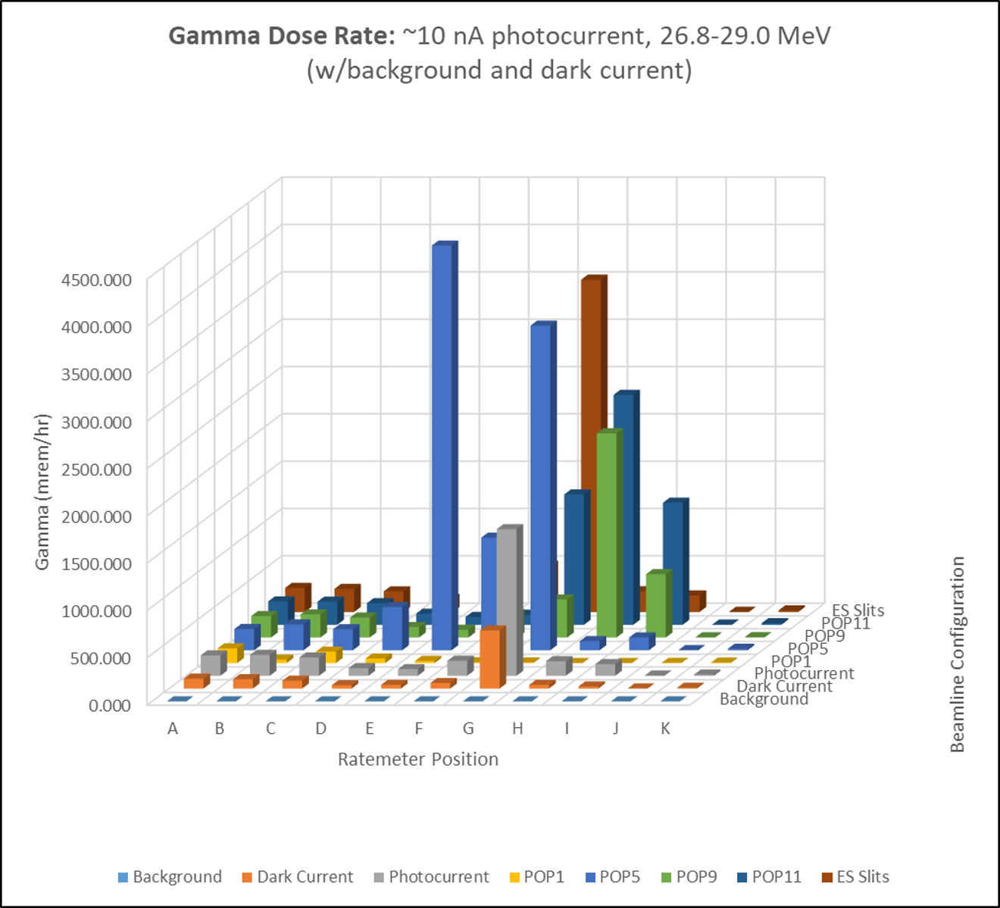
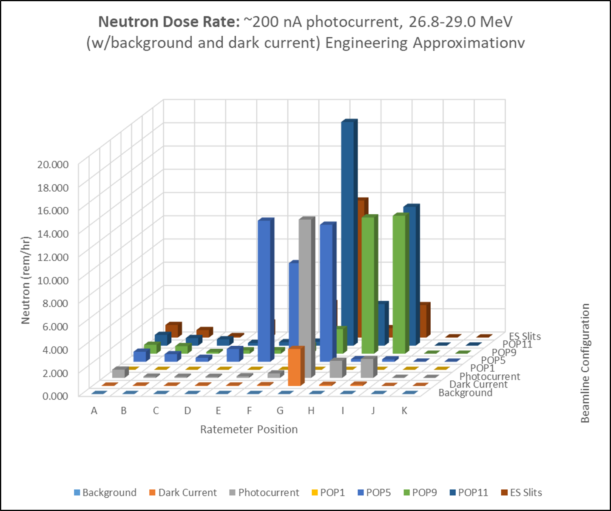

Ionizing Radiation Surveys and Results
This section provides a summary of the radiation data that has been collected in the CXLS suite.
Routine Radiation Survey of Vault-1 and Beam Line
Radiation surveys of the CXLS beamline and Vault-1 are taken routinely every week and after the accelerator is run. Below are maps of the locations where radiation measurements are taken using the Ludlum 9DP.

Figure 1: Survey points along the beamline.
Figure 2: Survey points throughout Vault-1.
Figure 3: Survey point in the Accelerator Lab for reference.
Below is a summary of the data collected from the radiation surveys.
Figure 4: Average radiation survey readings at contact and 30 cm from beamline.
Figure 5: Average radiation survey readings in the general area of Vault-1.
Figure 6: Dose rate distribution in Vault-1. Note that there is one point that was taken after a long beam time near 1200, however the vast majority of the points are below 20 uSv/hr.
Radiation Characterization Survey of Vault-1
After the Apantec area monitors were installed, and the software was developed to communicate and collect data from these devices, a survey was taken of Vault-1 and perimeter areas. The Apantec area monitor in Vault-1 was made mobile and placed around various locations in Vault-1. Below are the map of the detector locations and the summary of the data.

Figure 7: This is the map of the locations where Vault-1 radiation meter was placed.

|
 | 
|
Overlay of the XELERA simulations with the cart positions used in the survey. ============== |
Comparison of the XELERA simulations with the actual measurements at 20 pC. ================ |
Comparison of the XELERA simulations with the actual measurements at 200 pC. =============== |
Figure 8: This figure shows the XELERA simulation data compared to the measured results.

|
 |  | 
|
 | |
Radiation survey readings at Vault-1. ======================================================= |
Radiation survey readings at Vault-1. ======================================================= |
Radiation survey readings at Vault-1. ======================================================= |
Radiation survey readings at Vault-1. ======================================================= |
Radiation survey readings at Vault-1. ======================================================= |
Radiation survey readings at Vault-1. ======================================================= |
{kind=link}
{kind=link}
{kind=link}
{kind=link}
Figure 9: This figure shows the average radiation gamma and neutron reading at different locations and configurations, as well as the projections to full beam charge specs.
Radiation Characterization Survey of Hutch-1
Once holes were put into the Hutch-1 / Vault-1 wall for the divergent and collimated beamline, a survey was taken of Hutch-1. Inside of Hutch-1, radiation measurements were taken near the penetration, inside of the experimental chamber, and behind the detector chamber. Below are the maps of the detectors, the beam charge and energy, and the summary of the data that was collected and measured above background.
Figure 10: This is the map of the locations where Hutch-1 radiation meter was placed.
Figure 11: This is the map of the locations where Hutch-1 radiation meter was placed.
Figure 12: This is the map of the beam levels in Hutch-1.
{kind=link}
{kind=link}
{kind=link}
{kind=link}
Figure 13: This figure is showing the only data where above background radiation was measured.